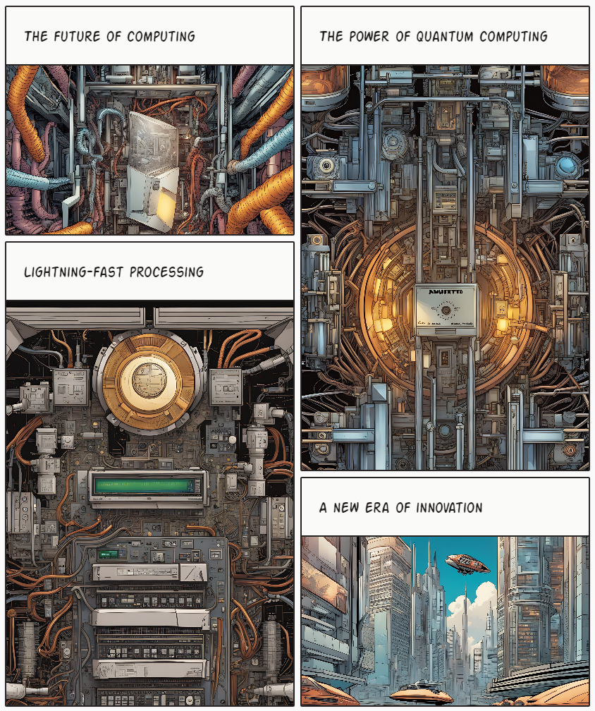

Quantencomputer
Quantencomputer sind Computer, die die Gesetze der Quantenmechanik nutzen. Anstatt makroskopische Zustände elektronischer Schaltkreise, werden quantenmeschanische Zustände verwendet.

Vorteile
- Können bestimmte Arten von Optimierungsproblemen erheblich schneller lösen → Grover-Algorithmus, Shor-Algorithmus
- Verschlüsselungsverfahren schnell und effizient brechen
- Könnte in Machine-Learning-Anwendungen Rolle spielen, bei Datenverarbeitung und Beschleunigung Trainingsprozesse
- Neue Algorithmen und Ansätze für KI entwickeln → maschinelles Lernen, neuronale Netze
- Muss weiterentwickelt werden → Erhöhung Qubits, Fehlerkorrektur
- Bedeutende Rolle in Software-Entwicklung → komplexe Probleme schneller lösen
Zukunft
- Revolutionäre Anwendungen